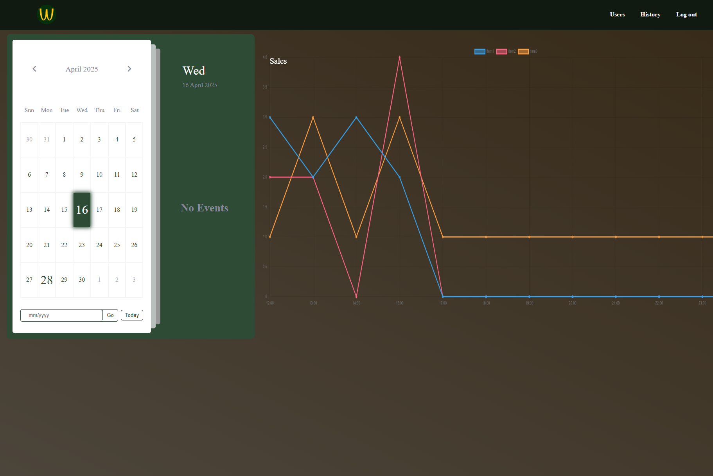
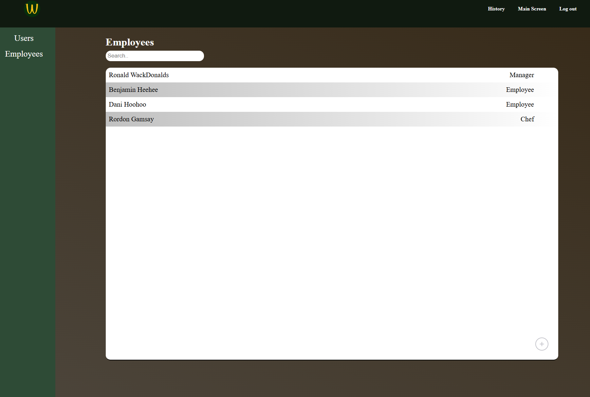
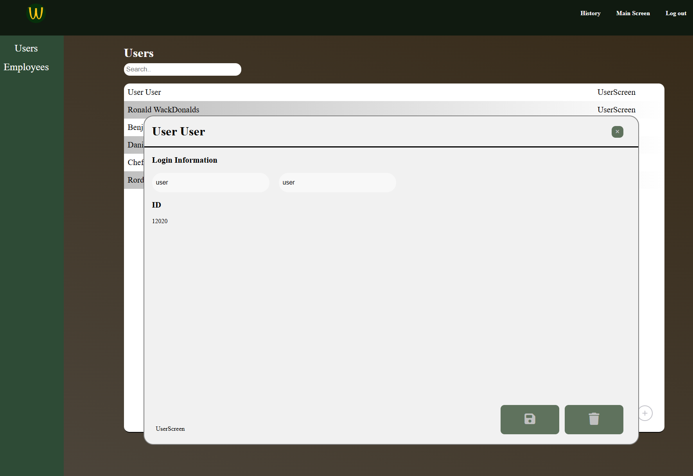
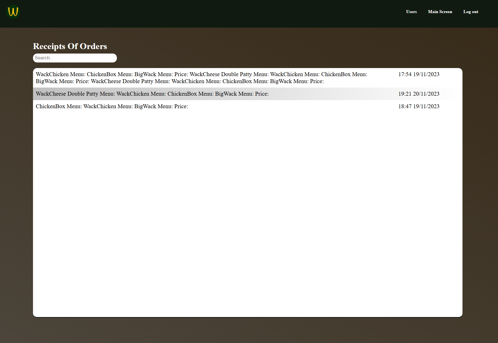
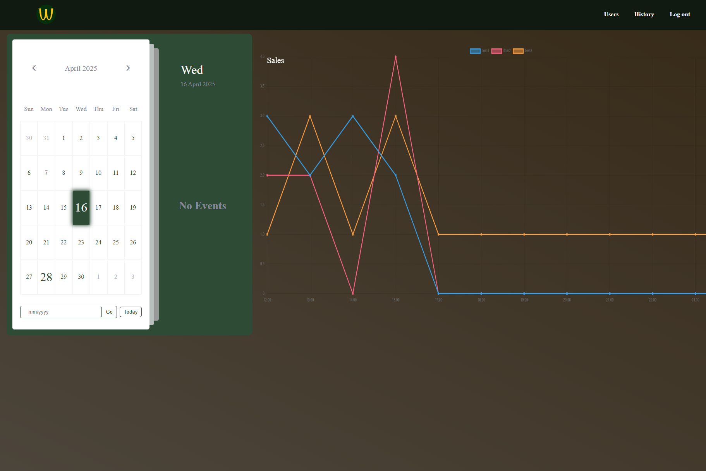
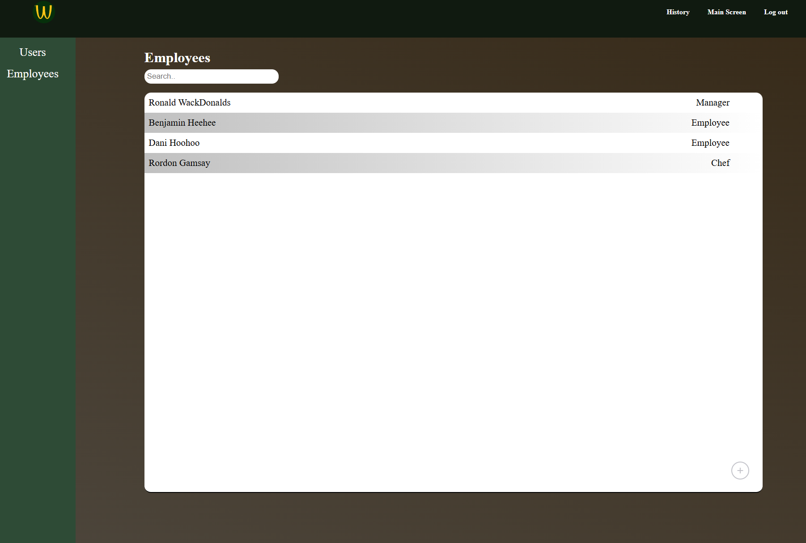
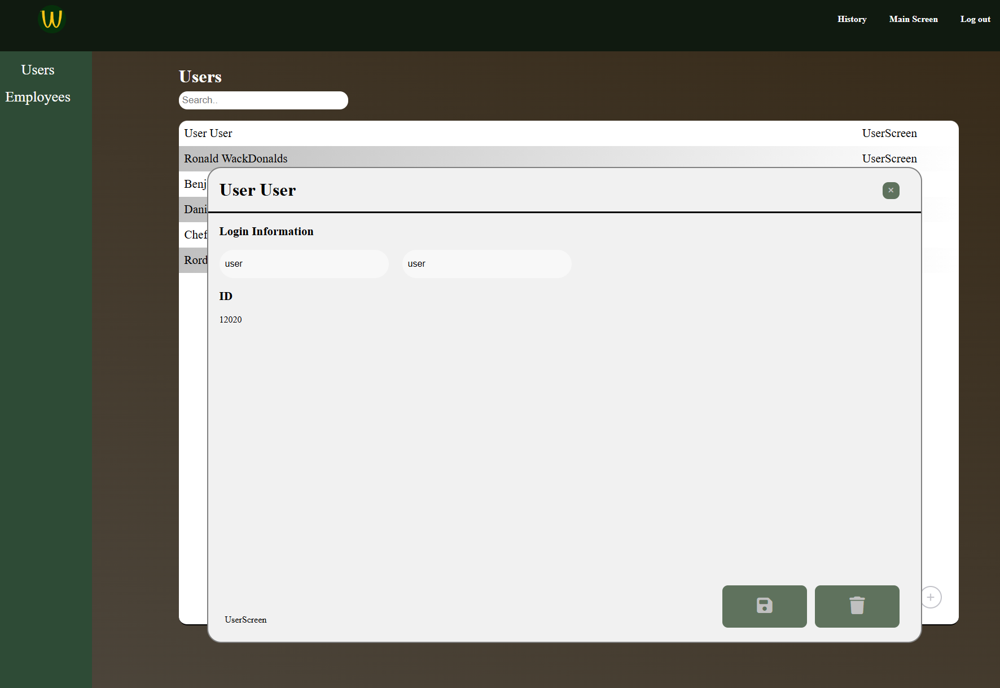
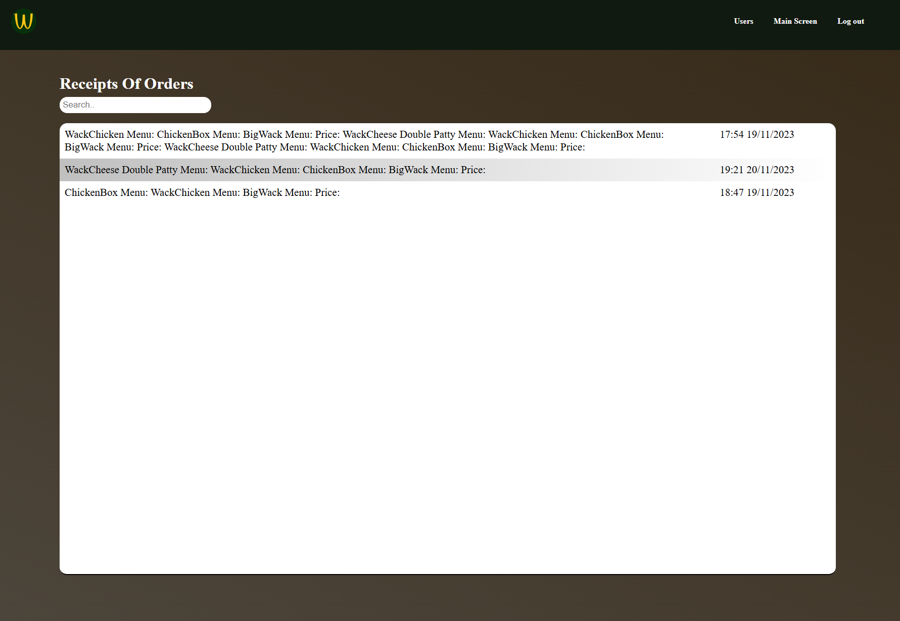

Mcdonalds Order System
Being one of my major projects, containing complex subjects including cybersecurity, API calls etc. its one of my more important projects. The site is made up of its frontend, made using Angular which ofcourse encompasses CSS, HTML and typescript. The backend were made with C# and lastly using postgres SQL as a database, in addition to extra tools such as Postman.
The site had 3 roles, costumer, chef and admin. As can be seen on the left the employees would first have to log in at the start of the day. on the main screens they would log into a user acount, the chefs a chef acount etc.
When logging in, the site makes use of hashing and salting. that is, the password lies encrypted in the database so it cant be easily stolen, and as the user logs in, that value gets encrypted and compared to the database. furthermore the site made use of JSON Web Tokens(JWT) to securily transfer this data, and additionaly cookies to limit the time before a user had to log back in.
And lastly the site was optimised to protect against the most common attacks such a sql injections etc. Making this site secure and safe to use.
 








As seen above and to the left, the user would be able to pick and choose between many orders all categorized and easy to find. The user then picks what they want, and costumize it after which the order gets added to the reciept. When the user then presses pay they get taken to the payment screen as seen on the left.
Obviously the site is not connected to any banks however it was instead used to show some understaning of protection against SQL injection as can be seen. When the user hen presses submit, an API is called and that order is then saved in the database.
Following this, the order is now retrieved by the chef and the admin, who use the data. In the admins case for statistics and in the chefs instance for displaying orders. This can be seen in several of the images above.
The chef gets an order which they can complete and the admin gets the data sorted into a chart. They can also view all receips and all users/employees. change their password etc.
Chatsy
For a larger personal project, I decided to explore the development of an online chat platform, utilizing C# for the back-end infrastructure. The primary focus of this platform is customization, allowing users to personalize their experience by adjusting features such as colors, backgrounds, and other visual elements. The goal is to offer an engaging and fun user interface that caters to individual preferences, making the platform enjoyable and user-friendly.
As demonstrated in the accompanying images, one of the key design objectives is to maintain a light and playful atmosphere while integrating unique features. For example, the platform would adapt the background based on the user's local time, creating a dynamic and immersive experience. Additionally, to prioritize user privacy and data security, the platform would not retain most information, except for essential user data. Similar to platforms like Snapchat, chat messages would be temporary and not stored for extended periods.
Eventually, there will ofcourse be implemented essential parts like security and the like. As this project is not finished its still up for deciscion.
Image Translator
As part of a recent project, we leveraged Azure's AI services to develop a web platform capable of processing image files or screenshots. The platform's primary function is to analyze the text contents within the images and provide translations. Users could upload an image, and the site would send the image base64 data for analysis. The extracted text was then passed to a translation AI, enabling users to receive a translated version of the content in any language of their choice.
The system was designed to operate entirely through API calls to and from Azure, with no reliance on a traditional database. This architecture allowed the platform to perform the necessary operations without storing any persistent data, ensuring both efficiency and privacy. The integration of Azure's AI services enabled us to provide seamless and real-time text analysis and translation for a smooth user experience.
On the frontend side of the project, we utilized React as the framework, with TypeScript for the development. While the design was not the main focus of this particular project, React enabled us to work efficiently and in an organized manner. The use of React allowed for rapid development and easy maintenance of the application.
The frontend was designed to be intuitive, allowing users to crop and zoom images seamlessly. This simplicity in design, coupled with React's capabilities, ensured that the user experience remained fast, straightforward, and accessible. The decision to use TypeScript further enhanced the development process by adding type safety and reducing potential errors, ultimately contributing to a more stable and maintainable codebase.
Photographer Site

This website was developed for a client, marking one of my first semi-serious professional projects. The platform was created for a photographer based in London who required a website to showcase contact information, a portfolio, and other relevant details. While the version shown here is a demo, it effectively demonstrates the final product.
The project was shaped by an iterative process of sprints and regular meetings with the client to ensure the design, color scheme, and overall functionality met their specific needs. To achieve the desired outcome, we conducted customer surveys, created detailed style guides, and incorporated feedback throughout. The result is an elegant yet grounded design, reflecting the professional standards expected of a photographer's online presence while maintaining a sophisticated yet accessible feel.
On the technical side, I focused on front-end development, ensuring that the website was responsive, user-friendly, and compatible across various devices and browsers. The project allowed me to refine my skills. One of the main challenges was balancing the client's vision with a functional, high-quality website that was easy to navigate. However, with strong collaboration and continuous feedback, we successfully overcame these obstacles, delivering a final product that met both aesthetic and technical standards.
This project not only helped me further develop my technical and design skills but also improved my client communication and project management abilities. It was a great learning experience that prepared me for future, more complex projects.
Quiz Site
I developed a simple feedback system for my place of work, designed to streamline communication between employees and management. The core functionality of the system was to capture feedback and send it directly to my boss for review. To facilitate this, the system was integrated with his Google Sheets account, ensuring that the feedback was automatically recorded in a structured format for easy access and analysis. This setup mirrors the contact system implemented on this website, where the user input is sent directly to me in a similar efficient manner.
This project was a quick yet valuable opportunity to implement a functional solution with minimal complexity, and it demonstrated how effective simple integrations can be for internal communication.
Microplastic Campain

For our first semester exam project, we were tasked with designing a website for an anti-plastic organization, with the goal of advocating for the cessation of plastic use through a global treaty. This project involved a comprehensive approach, starting with the analysis of the target audience, mapping customer journeys, and creating wireframes. We also developed marketing materials to support the cause and ensure the message resonated effectively with the audience.
The project was purely design-oriented, with no back-end development involved. I focused on creating an engaging, visually compelling user interface using HTML, CSS, and JavaScript. The emphasis was on delivering a seamless, user-friendly experience that communicated the urgency of the issue while maintaining a clean and impactful design.
This project provided valuable insight into the importance of user-centric design and how to craft a website that not only educates but also motivates action.
The website was designed with a user-friendly layout, starting with a clear and direct call to action in the header, ensuring that visitors immediately understand the site’s purpose. This header was strategically placed to capture attention right away, guiding users toward taking action. Next to the header, a slider was incorporated, showcasing articles related to the cause, allowing for dynamic content presentation.
Further down the page, additional articles were displayed, using vibrant colors, soft corners, and a welcoming aesthetic. This design approach was intentional, reflecting the values of the organization and catering to the target audience’s preferences. The visual elements were carefully chosen to create an inviting and positive atmosphere, aligning with the overall goal of motivating visitors to engage with the message in an approachable manner.
The articles featured on the site primarily served an informative purpose; however, their tone was carefully balanced to be both welcoming and assertive. The messaging was crafted to say, in effect, "Let's fix this together... but if action isn't taken, these consequences could affect you as well." This approach was intentional, designed to appeal to the target audience by first inviting them into the cause with a positive and cooperative tone.
At the same time, for visitors who may not initially recognize the severity of the issue, the content adopted a more serious tone to underline the real-world consequences of inaction. This dual approach ensured the message was accessible to a broad audience while still conveying the urgency of the problem. The article shown to the right is a strong example of this strategy, where the balance between encouragement and warning is clearly reflected.